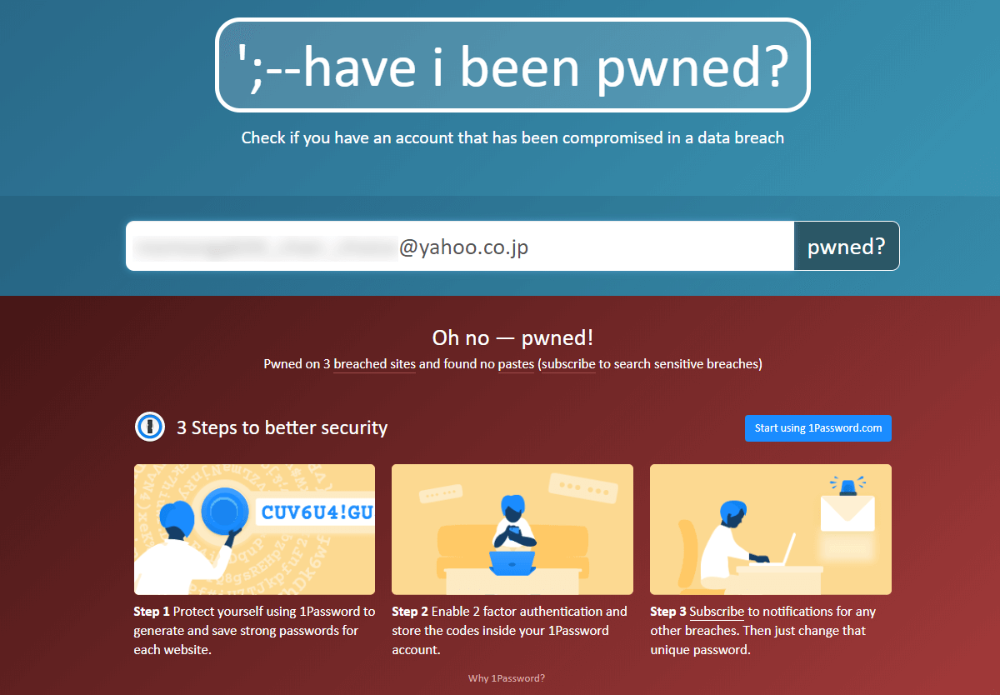

お小遣いサイトでバラ撒いた個人情報の後始末をする
お小遣いサイトってありますよね。ポイントサイトとも言われるアレです。げん玉とか、モッピーなどが有名です。CMサイトはローンチ当時、民放で頻繁にCMが流れていました。
そこで入力した個人情報を回収するのは大変で、そして完全に削除することなんて無理だよ、という話です。
お小遣いサイトとは
お小遣いサイトについて知らない方のために説明しますと…
仕組みとしては、企業がサイトに広告を打って、ユーザーは広告を見たり、会員登録やメルマガ登録などのアクションを起こすことによって、企業からの広告料の一部を報酬として還元してもらえるというものです。
覚えている範囲だと、10ポイント=1円で交換できて、一回の会員登録で30～100ポイントが貰えました。他にも毎日広告をクリックするやつとか、桃太郎電鉄のパクリみたいなクソゲーをプレイしてポイントを貰うやつとか色々なのがありました。
マルチ商法のような殺伐とした友達勧誘制度もありました。このリンクから登録すればXXXポイントもらえます！みたいな。アメブロなんかはそのリンクで溢れかえってました。
遡るは小学生の頃の話で、当時ただお小遣いが欲しくて、サイトのプログラムに流されるまま、いろんなサイトに会員登録しまくっていました…恐ろしいことに。
入力した情報
ポイントを貰う上で一番手っ取り早いのはサイトへの 会員登録 です。それで、自分が入力した個人情報は以下のようなものでした。
- 名前
- メールアドレス
- 住所
- 生年月日
- 電話番号
実際に情報は漏れているのか
会員登録を促されるサイトは、有名な企業が名を連ねていて、そこまで怪しいサイトではないのですが、実際に情報がどの程度漏れているのか調べてみましょう。
自分のメールアドレスが漏洩していないか確認できるWebサイトに「Have I Been Pwned?」があります。調べられるのはメールアドレスだけなのですが、よい指標になりそうです。
ここに当時使っていたメールアドレスを入力してみましょう。

漏れてますね。
自分の場合、登録に使っていたメールアドレスはこれだけでなく、他にも複数のメールアドレスから登録していて、それら全てでチェックに引っかかります。
よく「安全なお小遣いサイトまとめ」なんて記事を書いてるブログも見かけますが、そのサイト自体は安全であっても、そもそも自分の個人情報を入力すること自体が脅威だということが分かります。
たとえ相手が安心できる有名な企業・団体であったとしても、自分の個人情報を入力するということは、それだけのリスクを伴うことだということを肝に銘じたほうがよさそうです。
アカウントを見つけ出して削除する
という訳で過去の自分の愚行を猛省し、ここ2年ほど、暇を見つけては過去に作ったアカウントをチマチマ削除しています。
そこで問題となるのが、どのサイトに会員登録しているのか忘れてしまっている、ということです。そこでの手がかり的なのをメモ。
メルマガを手がかりにする
メールの受信ボックスに溜まっているメールを1件ずつ開いてサイトにアクセスし、パスワードを再発行して退会すればOKです。
自分のメールアカウントも、かつては1日に100件以上のメールが絶えず流れてくる状態でしたが、ここ2年ほどの努力で、直近の半年間にはメールが1件も来ていません。
ここで重要なのが、もうメールが来なくなったからと言って、すぐにメールアカウントを削除ししてはいけません。 メルマガが来ないサービスの場合でも、規約改定のお知らせなどの重要なメールが届く場合があります。
メールアドレスは保守を続け、半年に1度で良いのでログインし、受信ボックスの観察を続けましょう。
ユーザーIDを検索してみる
ユーザーに個別のマイページが発行され、それがネットに公開されるようなサービスだと、IDで検索すると出てきたりします。心当たりのある文字列を検索してみて、虱潰しに登録解除します。
ブラウザのパスワード保存機能
ブラウザのパスワード保存機能に、まだIDとパスワードの情報が残っているかもしれません。
自分は、過去にメインのGoogleアカウントを変えていて、旧アカウントのパスワードマネージャーにアカウントの記録が残っていました。
サービス終了のケース
メールから辿ってサイトにアクセスしてみたら、サービスが終了していた、というパターンです。自ら消した訳ではないのでモヤモヤしますが、適切に情報が破棄されているのを祈るしかないです。
メールの受信ボックスが開けない場合
そもそもどんなメールアドレスで登録したのか分からなかったり、既にメールアドレスが使えなくなっている場合は、道のりが険しくなります。というのも、受信ボックスが開けないとパスワードの再発行ができないからです。
他のサービスとパスワードを使い回ししたりしていないか、などを手がかりに パスワードを思い出しましょう。
おわりに
これだけ削除の努力をしても、あくまで表面上のものであって、流出してしまった情報は名簿となって裏で売買されているでしょう。それが一番怖いところですね。
メルマガだらけになっているメールアカウントに心当たりがある、という方は諦めずに少しでも回収しましょう。